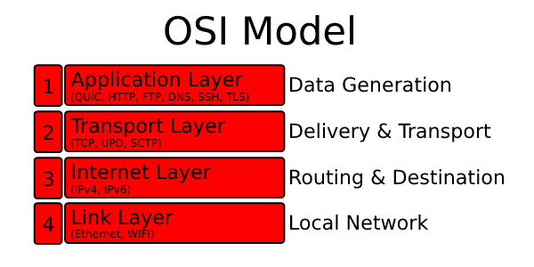
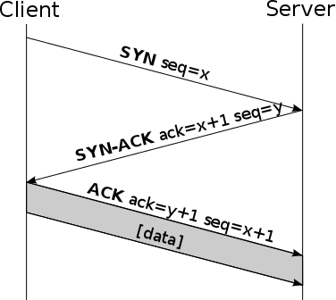

{{#include ../../README.md}}
Certificates
A Certificate Authority (CA) is an entity that issues digital certificates. These digital certificates certify the ownership of a public key associated with a host, server, client, document, and more. Digital certificates help to ensure users can trust that your content is actually from a reliable, safe source.
By default, Quinn clients validate the cryptographic identity of servers they connect to. This prevents an active, on-path attacker from intercepting messages, but requires trusting some certificate authority and thus some configuration up-front. However, it is possible to use Quinn over an insecure connection or self-sign your certificates.
Insecure Connection
For some cases, including peer-to-peer, trust-on-first-use, deliberately
insecure applications, or any case where servers are not identified by domain
name, a certificate isn't practical. Arbitrary certificate validation logic can be
implemented by enabling the dangerous_configuration feature of rustls.
In addition you need to override the certificate verifier by hand in the ClientConfig.
First, add a rustls dependency with the dangerous_configuration feature flag to your toml file.
quinn = "*"
rustls = { version = "*", features = ["dangerous_configuration", "quic"] }
Then, you can skip the certificate check on the client by implementing rustls::ServerCertVerifier and let it always return 'correct'.
After that, we should configure our client to use this certificate verifier.
#![allow(unused)] fn main() { pub fn insecure() -> ClientConfig { let mut cfg = quinn::ClientConfigBuilder::default().build(); // Get a mutable reference to the 'crypto' config in the 'client config'.. let tls_cfg: &mut rustls::ClientConfig = std::sync::Arc::get_mut(&mut cfg.crypto).unwrap(); // Change the certification verifier. // This is only available when compiled with 'dangerous_configuration' feature. tls_cfg .dangerous() .set_certificate_verifier(Arc::new(SkipCertificationVerification)); cfg } }
Now, if you throw this ClientConfig into the Endpoint::default_client_config() your endpoint should verify all connections as trustworthy.
Using Certificates
In this section we look at how to create a certificate for Quinn. First we deal with the self-signed certificate, and after that the real certificates.
There are two common types of certificate formats. Those are .pem and .der.
The .der certificates are byte encoded while .pem are text encoded.
You can convert on to the other by using tooling such as openssl or also withing code its self as demonstrated below.
Let's define two useful function that can dissect byte certificates and return nice instances of structures.
#![allow(unused)] fn main() { pub fn parse_der(cert: Vec<u8>, private_key: Vec<u8>) -> anyhow::Result<(quinn::Certificate, quinn::PrivateKey)> { let cert = quinn::Certificate::from_der(&cert)?; let key = quinn::PrivateKey::from_der(&private_key)?; Ok((cert, key)) } pub fn parse_pem(cert: Vec<u8>, private_key: Vec<u8>) -> anyhow::Result<(quinn::Certificate, quinn::PrivateKey)> { // Parse to certificate chain whereafter taking the first certificate in this chain. let cert = quinn::CertificateChain::from_pem(&cert)?.iter().next().unwrap().clone(); let key = quinn::PrivateKey::from_pem(&private_key)?; Ok((quinn::Certificate::from(cert), key)) } }
Self Signed
Sometimes working with your own certificate authority makes no sense, then you can use self-signed certificates.
For this purpose [rcgen][rcgen] can be used.
You need to write the certificate to permanent storage for later reuse.
Notice that generate_simple_self_signed supports both .der and .pem formatting.
Let's look at an example:
#![allow(unused)] fn main() { pub fn generate_self_signed_cert(cert_path: &str, key_path: &str) -> anyhow::Result<(quinn::Certificate, quinn::PrivateKey)> { // Generate dummy certificate. let certificate = rcgen::generate_simple_self_signed(vec!["localhost".into()]).unwrap(); let serialized_key = certificate.serialize_private_key_der(); let serialized_certificate = certificate.serialize_der().unwrap(); // Write to files. fs::write(&cert_path, &serialized_certificate).context("failed to write certificate")?; fs::write(&key_path, &serialized_key).context("failed to write private key")?; parse_der(serialized_certificate, serialized_key) } }
Official Certificates
Let’s Encrypt is a CA and gives out certificates for free. Its a very well-known CA used for many applications around the world. We can cover a full lets-encrypt tutorial here but instead I am going to keep it short. There is plenty of documentation out there which keeps itself up-to-date.
Generate Certificate
Official certificates can be requested from an organization such as Let's Encrypt. Let's Encrypt works together with Certbot who will generate the certificate for you. Because we generate a certificate for a protocol we assume that you are not using a web server. Select on the certbot website that you do not have a web server and follow the given installation instructions.
If certbot is installed, run certbot certonly --standalone, this option assumes that you do not have a web server installed and will therefore run a web server during the process.
After entering your information and domain addresses two .pem files, namely: Con cert.pem and privkey.pem will be generated.
As soon as they are generated, copy them to your project.
#![allow(unused)] fn main() { // Read from certificate and key from directory. let (cert, key) = fs::read(&"./cert.pem").and_then(|x| Ok((x, fs::read(&"./privkey.pem")?)))?; // Parse bytes to type. parse_pem(cert, key) }
Configuring Certificates
When you generated the certificate it needs to be configured into the client and server.
certificate is of type Certificate and key of type PrivateKey.
Configure Server
#![allow(unused)] fn main() { let mut builder = ServerConfigBuilder::default(); builder.certificate(CertificateChain::from_certs(vec![certificate]), key)?; }
Configure Client
#![allow(unused)] fn main() { let mut builder = ClientConfigBuilder::default(); builder.add_certificate_authority(certificate)?; }
If done well, your endpoint should be encrypted.
Nextup, we will have a take on how to setup the connection.
Connection Setup
Het opzetten van een quin connectie is het begin van een grote stap naar een betere wereld, echter moet je hier wel wat voor doen.
Het begint bij de Endpoint struct, dit is tevens de entry van de library.
Vanaf uit hier kan je verbindingen opzetten naar andere peers.
Om een verbinding op te kunnen zetten moet je een aantal configuraties door voeren.
Configuraties zoals cryptografie en transport instellingen.
Echter valt dit buiten de scope van dit hoofstuk en wordt daarom hier niet besproken.
Hoe je een Endpoint configureerd kan je in [dit][LINK] hoofstuk vinden.
Omdat we geen configuratie gebruiken zullen de komende voorbeelden dus niet out-of-the box werken.
Als je een Endpoint heb opgezet kan je beginnen met het versturen en ontvangen van data, ziet het volgende hoofdstuk voor meer informatie.
Example
Laten we beginnen met het defineren van wat constanten.
#![allow(unused)] fn main() { static SERVER_NAME: &str = "localhost"; fn client_addr() -> SocketAddr { "127.0.0.1:5000".parse::<SocketAddr>().unwrap() } fn server_addr() -> SocketAddr { "127.0.0.1:5001".parse::<SocketAddr>().unwrap() } }
Voor zowel een server als client kunnen we gebruik maken van de EndpointBuilder.
Hiermee kunnen we onze endpoint configuren als een server of client.
Het is van belang om je endpoint aan een address te koppelen.
Dit doe je doormiddel van EndpointBuider::bind(address).
Deze functie initializeerd een UDP-socket die door QUIC gebruikt wordt.
Het is ook mogelijk om vanaf een bestaande socket QUIC te initialiseren.
Gebruik hier voor EndpointBuider::with_socket.
Client
In het geval van een client endpoint dien je connect() op de endpoint aan te roepen.
De servernaam staat als het goed is in je certificaat.
#![allow(unused)] fn main() { async fn client() -> anyhow::Result<()> { let mut endpoint_builder = Endpoint::builder(); // Bind this endpoint to a UDP socket on the given client address. let (endpoint, _) = endpoint_builder.bind(&client_addr())?; // Connect to the server passing in the server name which is supposed to be in the server certificate. let connection: NewConnection = endpoint .connect(&server_addr(), SERVER_NAME)? .await?; // Start transferring, receiving data, see DataTransfer tutorial. Ok(()) } }
Server
In het geval van een server dien je EndpointBuilder::listen() aan te roepen met de ServerConfiguration.
Let er op dat dit niets anders is dan het instellen van configuratie en dus geen lusiter logica uitvoert.
De twee
#![allow(unused)] fn main() { async fn server() -> anyhow::Result<()> { let mut endpoint_builder = Endpoint::builder(); // Configure this endpoint as a server by passing in `ServerConfig`. endpoint_builder.listen(ServerConfig::default()); // Bind this endpoint to a UDP socket on the given server address. let (endpoint, mut incoming) = endpoint_builder.bind(&server_addr())?; // Start iterating over incoming connections. while let Some(conn) = incoming.next().await { let mut connection: NewConnection = conn.await?; // Save connection somewhere, start transferring, receiving data, see DataTransfer tutorial. } Ok(()) } }
Data Transfer
In het vorige hoofdstuk hebben we gekenen hoe je een Endpoint kan opzetten
en vervolgens toegang kan krijgen tot een NewConnectie instantie.
Nu gaan we kijken hoe je data over deze verbinding kan sturen.
Multiplexing
Alhoewel QUIC op UDP is gebouwd onderstuend het streams. A QUIC stream is similar to a TCP stream, but you are not limited to a single stream. You can open multiple streams between two peers. This is also called 'multiplexing'.
Stream multiplexing can have a significant positive effect on the performance of applications if the resources assigned to streams are properly prioritized. Multiplexing is also used in the HTTP/2 protocol, but in QUIC it is not handled automatically. It is entirely in the hands of the user to deal efficiently with multiplexing.
Stream Types
Quinn offers three ways to send your data. Two stream-based and one message-based.
| Type | Description | Reference |
|---|---|---|
| Bidirectional Stream | two way communication. | see open_bi |
| Unidirectional Stream | one way communication. | see open_uni |
| Unreliable Messaging | message based unreliable communication. | see send_datagram |
Soon we will discuss this in more detail with a few more people.
How to Use
You can open a new stream or read from an existing stream.
New streams can be created with the methods open_bi, open_uni in NewConnection::connection.
Existing streams can be found in NewConnection.
Both the client and the server are able to open a stream and start sending and receing constrained by the stream type.
Iterate over various opened streams
#![allow(unused)] fn main() { async fn iterate_streams(mut connection: NewConnection) -> anyhow::Result<()> { // Iterate unidirectional streams with only the receiving side. while let Some(Ok(recv)) = connection.uni_streams.next().await { } // Iterate bidirectional streams with both sent and receiving side. while let Some(Ok((sent, recv))) = connection.bi_streams.next().await { } // Iterate arrived datagrams. while let Some(Ok(bytes)) = connection.datagrams.next().await { } Ok(()) } }
Open different type of streams
#![allow(unused)] fn main() { async fn open_streams(mut connection: Connection) -> anyhow::Result<()> { // Open unidirectional stream. let mut send = connection. open_uni() .await?; // Open bidirectional stream. let (send, recv) = connection. open_bi() .await?; Ok(()) } }
Bidirectional Streams
With bidirectional streams you can carry data in both directions, for example, client to server and server to client.
open bidirectional stream
#![allow(unused)] fn main() { async fn open_bidirectional_stream(connection: Connection) -> anyhow::Result<()> { let (mut send, recv) = connection. open_bi() .await?; send.write_all(b"test").await?; send.finish().await?; let received = recv.read_to_end(10).await?; Ok(()) } }
iterate bidirectional stream(s)
#![allow(unused)] fn main() { async fn receive_bidirectional_stream(mut connection: NewConnection) -> anyhow::Result<()> { while let Some(Ok((sent, recv))) = connection.bi_streams.next().await { // Because it is a bidirectional stream, we can both sent and recieve. println!("request: {:?}", recv.read_to_end(50).await?); send.write_all(b"response").await?; send.finish().await?; } Ok(()) } }
Unidirectional Streams
With unidirectional streams, you can carry data only in one direction, for example, from the initiator of the stream to its peer.
open unidirectional stream
#![allow(unused)] fn main() { async fn open_unidirectional_stream(connection: Connection)-> anyhow::Result<()> { let mut send = connection. open_uni() .await?; send.write_all(b"test").await.unwrap(); send.finish().await?; Ok(()) } }
iterating unidirectional stream(s)
#![allow(unused)] fn main() { async fn receive_unidirectional_stream(mut connection: NewConnection) -> anyhow::Result<()> { while let Some(Ok(recv)) = connection.uni_streams.next().await { // Because it is a unidirectional stream, we can only receive not sent back. println!("{:?}", recv.read_to_end(50).await?); } Ok(()) } }
Unreliable Messaging
With unreliable messaging you can transfer data unreliable over bare UDP.
send datagram
#![allow(unused)] fn main() { async fn sent_unreliable(connection: Connection)-> anyhow::Result<()> { connection. send_datagram(b"test".into()) .await?; Ok(()) } }
iterating datagram stream(s)
#![allow(unused)] fn main() { async fn receive_datagram(mut connection: NewConnection) -> anyhow::Result<()> { while let Some(Ok(receivedBytes)) = connection.datagrams.next().await { // Because it is a unidirectional stream, we can only receive not sent back. println!("request: {:?}", received); } Ok(()) } }
QUIC Introduction
QUIC is a general-purpose, transport layer, network protocol, built on top of UDP. It is still an internet draft undergoing standardization by the IETF. This indicates that it is not yet stabilized. Quinn focuses on satisfying the latest draft but may lag some drafts behind. The fact that it is a draft does not detract from the fact that QUIC is already used by more than half of all connections from Chrome web browsers to Google's servers with increasing adoption in the overall market.
QUIC aims to be nearly equivalent to a TCP connection. With the goals to improve the performance of connection-oriented web applications, reduce connection and transport latency, and estimate bandwidth for better congestion control. While the intentions of QUIC were original web-oriented, it suits other areas like the game-networking industry very well.
Networking Introduction
The Internet is unreliable, it changes every second, cables can be cut, network congestion can occur, packets can become corrupted, etc. As soon as we send a packet, it can take any road to reach its destination. To assure the end-user of certain transmission guarantees, such as the arrival of parcels, specific protocols are defined.
There are some established protocols such as TCP, UDP which are supported by all routers, firewalls, servers, and operating systems. Although these protocols are well accepted, this does not mean that they are perfect or serve all areas of interest. QUIC is being created to solve the problems of the modern Internet and the TCP protocol.
In the next chapter we will take a closer look at the various protocols, their transmission guarantees, and areas of interest.
Transport Guarantees
Transport Protocols
It is an excellent question to ask what protocol suits your project the most. Different protocols serve different use cases and the wrong protocol can be catastrophic. Before jumping directly into the meat of QUIC, it can be useful to understand its underlying motivations. For those motivations we have to inspect the flaws of TCP and nature of UDP, because QUIC tries to improve the flaws of TCP ontop of UDP.
If your already familiar with terminologies as IP/TCP/UDP and their transport guarantees and differences feel free to skipp this section. For this section we will be using the Internet protocol suite as a guidance.

Different layers serve different use cases.
For example, the application layer is not responsible for the data transfer while the transport layer is.
Both TCP and UDP work on the transport layer while a protocol like QUIC works on the application layer.
The advantage of this is that routers and firewalls see these protocols as a UDP or TCP instead of QUIC.
Because no special hardware software is needed, it follows that development can be faster and that adoption can occur in parallel.
IP - Internet Layer
All communication over the internet is happening ontop of IP (Internet Protocol). The internet protocol works by splitting data into little chunks called datagrams or packets. The chunks are then sent across the internet from one IP address to another. However, this protocol transfers packets across the network without any guarantee and it is by nature unreliable. Therefore we need certain specific guarantees. This is exactly were transport protocols, like TCP, UPD, and application protocols, like QUIC, HTTP, come in.
TCP/IP and UDP Comparison - Transport layer
TCP: stands for 'transmission control protocol' and adds certain guarantees ontop of IP. It forms the backbone for almost everything you do online, from web browsing to IRC to email to file transfer.
UDP stands for 'user datagram protocol' and adds certain guarantees ontop of IP, but unlike TCP, instead of adding lots of features and complexity, UDP is a very thin layer over IP and is also unreliable in nature.
| Feature | TCP | UDP |
|---|---|---|
| Connection-Oriented | Yes | No |
| Transport Guarantees | Reliable Ordered | Unreliable |
| Packet Transfer | Stream-based | Message based |
| Automatic fragmentation | Yes | Yes, but better is to stay below datagram size limit |
| Header Size | 20 bytes | 8 bytes |
| Control Flow, Congestion Avoidance/Control | Yes | No |
Problems of TCP
In the previous section we compared TCP with UDP, now the golden question: Why should we prefer one over the other? One might ask: "Why choose so much uncertainty with UDP when TCP is so reliable and safe?". That's a good question to ask yourself. To answer that question we will have to delve a little deeper into how TCP works.
Head-of-line Blocking
One of the biggest problem/feature in the TCP protocol is the Head-of-line blocking. It is a convenient feature because it ensures that all packages are sent and arrive in order. However, in cases of high throughput (multiplayer game networking) and big load in short time (web page load) this can be catastrophic to your application performance.
Lets check this animation out to demonstrate the issue:

This animation shows that if a certain packet drops in transmission, all packets have to wait at the transport layer until it is resent by the other end. If the dropped packet is resent and arrived then all packets are freed from the transport layer.
Multiplayer Game Networking
Multiplayer action games are based on a constant stream of packets sent at a speed of 10 to 30 packets per second, and for the most part, the data in these packages are so time-sensitive that in most cases only the most recent data is useful. You can think of the input of the player, the position of the player, the orientation and speed, and the state of the physical objects in the world. If a single packet drops out we can not afford to queue up 10-30 packets a second until the lost packet arrives. This could cause annoying lag behaviour and bad user experience.
Web Networking
Gamenetworking is not the only area were this head-of-line blocking plays is a big problem. The World Wide Web is a place were quick web-page load speeds are very important (who wants to wait 200ms to long right?). As websites grow in size and attention span decreases we need faster loading times for the websites.
HTTP-2 introduced technique called multiplexing. In short, multiple TCP streams will be setup to communicate with the server if a website loads. Then If one of them blocks the whole website can continue to load seemingly while that single stream is retransmitting.
We will take a deeper dive into this subject when looking at QUIC multiplexing.
Connection Setup Duration
In standard HTTP+TLS+TCP, TCP needs a handshake to establish a session between server and client, and TLS needs its own handshake to ensure that the session is secured.

First, the source sends an SYN “initial request” packet to the target server in order to start the dialogue. Then the target server sends a SYN-ACK packet to agree to the process. Lastly, the source sends an ACK packet to the target to confirm the process, after which the message contents can be sent.
Now if we want to secure the TCP connection, we have to use a protocol like TLS on top of it. If we use an older TLS version < 1.3 then there are three more handshakes that are required.
You can see how expensive it is to create a TCP connection. In a scenario of TCP and TLS 1.2 with a 100ms latency we need to wait 6 x 100ms = 600ms to set up a connection. If the website is big in size, an additional load time can make the website load over a second into seconds. Which is of course disturbing for our short attention spans.
Requests in Segment
TCP segment can only carry a single HTTP/1.1 Request/Response. Consequently it is possible that a large number of small segments are sent within an HTTP/1.1 session. This can lead to a large overhead.
Client Connection Initiation
HTTP/1.1 transfers are always initiated by the client. This decreases the performance of HTTP/1.1 significantly when loading embedded files, because a server has to wait for a request from the client, even if the server knows that the client needs a specific resource.